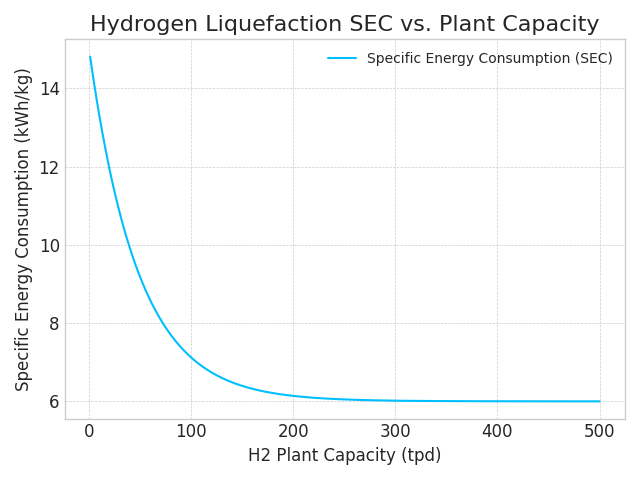

Commodity Transport Model: Documentation
1. Introduction
The global transition towards a sustainable future necessitates the development of robust supply chains for low-carbon energy carriers and efficient, sustainable food distribution. As renewable energy generation becomes more widespread but remains geographically constrained, and as global food systems face increasing pressures, the ability to transport diverse commodities efficiently and responsibly across continents is paramount.
Among the leading candidates for large-scale energy transport are liquid hydrogen (LH2), ammonia (NH3), and methanol (CH3OH). Each presents a unique set of advantages and challenges: LH2 offers high gravimetric energy density but requires extreme cryogenic conditions; Ammonia can be liquefied at a much more manageable -33°C, positioning it as a strong candidate for a hydrogen carrier, though its toxicity requires stringent safety protocols; Methanol, a liquid at ambient conditions, is the easiest to handle but has a lower energy density and requires a non-fossil carbon source to be considered a net-zero fuel.
Beyond fuels, the transportation of perishable food items globally, especially those requiring refrigeration and controlled atmospheres, presents its own complex interplay of cost, energy, and environmental impact. Factors like spoilage, precise temperature control, and specialized container systems add layers of complexity.
Evaluating the viability and sustainability of these diverse transportation pathways requires a comprehensive Life Cycle Assessment (LCA) that goes beyond simple energy content or unit comparisons. An LCA must account for energy losses, financial costs, and greenhouse gas emissions at every stage of the supply chain—from initial processing to final delivery. This model provides a detailed "well-to-wake" or "farm-to-fork" analysis of the transportation leg of various commodity supply chains, offering a dynamic tool to compare these scenarios on a consistent basis. By integrating real-world geographic data, live energy pricing, detailed thermodynamic calculations, and nuanced operational considerations, this tool aims to provide a realistic and transparent assessment of the cost, energy consumption, and environmental impact associated with moving critical commodities across the globe.
2. Methodology
The model is architected as a sequential, process-based simulation. It evaluates the entire transportation supply chain, broken down into distinct stages, from the initial loading of the commodity at the origin site to its final unloading at the end-use location. The core of the model is built in Python, leveraging the Flask framework for the web interface and the SciPy library for numerical optimization.
2.1. System Boundaries and Optimization
The analysis typically begins post-production/harvesting of the commodity and ends prior to its final end-use or consumption. A central computational challenge, particularly for the fuel pathway, is to determine the initial quantity of a commodity required to meet a specific target weight at the destination, accounting for all losses incurred during transit (e.g., boil-off gas for LH2/Ammonia, spoilage for food). This is solved using an optimization routine:
-
Objective Function: The model employs the
scipy.optimize.minimizefunction (using the 'SLSQP' method) to find the optimal initial mass of the chemical (`chem_weight`). - Target: The optimizer's goal is to minimize the absolute difference between the simulated final delivered mass and the target mass required to fill the designated ship tanks (currently set at 98% of total volume for fuels). For food, the optimization ensures sufficient initial mass to cover losses and deliver the desired quantity.
- Constraints: The optimization is constrained to ensure the initial weight is sufficient to cover all subsequent losses, preventing a negative result.
2.2. Modeled Supply Chain Stages
The model simulates a comprehensive sequence of process steps, adaptable to either fuel or food commodities:
- Initial Production/Harvesting & Preparation: A placeholder step representing the starting point and initial value of the commodity. For food, this includes processes like washing, sorting, and packaging. Because these calculations are not performed as a part of the model, the values in this step are all zero.
- Initial Liquefaction/Pre-cooling/Freezing: Energy-intensive steps depending on the commodity. For fuels, liquefaction; for foods, pre-cooling (removing field heat) or freezing (reducing temperature below 0°C).
- Loading to First Transport (e.g., Truck): Transfer from initial processing/storage to inland transport vehicles.
- Inland Transport (Origin Side): Truck transport from the production/farm site to the port of origin.
- Unloading to Port Storage: Transfer from trucks to port-side storage tanks or direct to ship.
- Port Storage (Origin): Temporal storage at the port of origin.
- Loading to Marine Vessel: Transfer of commodity to the marine vessel, including cooling down vessel tanks for cryogenic/refrigerated cargo.
- Maritime Transport: Transport across the designated sea route, accounting for propulsion, refrigeration, and boil-off/spoilage.
- Unloading from Marine Vessel: Transfer from the ship to the destination port's storage tanks or directly to inland transport.
- Port Storage (Destination): Temporal storage at the port of destination.
- Loading to Final Transport (e.g., Truck): Transfer from port storage to trucks for final delivery.
- Inland Transport (Destination Side): Truck transport from the destination port to the end-use site.
- Unloading to Final Storage: Transfer from trucks into final storage at the end-use site.
- Final Storage (Destination): Storage before end-use or consumption.
- Final Unloading/Use: The final transfer step to the point of use or market.
2.3. Core Calculation Framework
For each of the above stages, the model calculates the associated costs, energy consumption, greenhouse gas emissions, and mass losses (boil-off for fuels, spoilage for food).
2.3.1. Energy Consumption
- Liquefaction & Refrigeration (Fuels): For liquid hydrogen, a curve-fit function (`liquification_data_fitting`) derived from literature is used to determine the energy required based on plant capacity. For ammonia and other chemicals, the energy is calculated based on thermodynamic principles (specific heat, latent heat) and the Coefficient of Performance (COP) of the refrigeration cycle. 
- Pre-cooling & Freezing (Food): Energy is calculated based on commodity-specific heat capacities, latent heats (for freezing), and the COP of the refrigeration systems, considering initial and target temperatures.
- Pumping/Transfer: Pumping power is calculated based on the fluid density, flow rate, and pump head, adjusted for pump efficiency.
- Inland Transport (Truck): The energy for truck propulsion is calculated based on the number of trucks required, the distance traveled, and the fuel economy (km/L) of the trucks. This allows for differentiated fuel consumption based on vehicle weight and type (e.g., specific parameters for cryogenic trucks for LH2). Energy for on-board refrigeration (reefer units) during transit is calculated separately based on heat ingress and duration for both fuel tankers and food containers.
- Maritime Transport: Energy consumption is based on the ship's main engine fuel consumption rate (SFOC in g/kWh), total distance of the sea route, and the heating value of the selected marine fuel. Auxiliary power for reefer containers or controlled atmosphere (CA) systems on board is also calculated and contributes to fuel consumption.
2.3.2. Mass Loss (Boil-Off Gas for Fuels, Spoilage for Food)
- Boil-Off Gas (BOG - Fuels): BOG is a critical factor, especially for LH2. The model calculates the Boil-Off Rate (BOR) for each storage and transport step. The base BOR is adjusted based on the ambient temperature of the location (retrieved via API), using a temperature-dependent factor (`dBOR_dT`). The total mass loss in each stage is a function of the adjusted BOR and the duration of that stage.
- Spoilage (Food): Mass loss for food commodities is calculated based on commodity-specific spoilage rates (per day) and the duration of each transport or storage stage. For commodities utilizing Controlled Atmosphere (CA) technology, a reduced spoilage rate is applied. Temperature sensitivity of spoilage is also factored in.
2.3.3. Greenhouse Gas Emissions (CO2-equivalent)
- Indirect Emissions: These are calculated from energy consumption (electricity, diesel, marine fuels). The model fetches real-time carbon intensity (gCO2eq/kWh) of the electricity grid at the start and end locations using the Electricity Map API. For transport fuels like diesel and marine fuels, standard emission factors from the EPA and other reputable sources are used.
- Direct Emissions: These result from fugitive emissions. For fuels, this primarily includes the BOG that is vented to the atmosphere (if not recirculated). The mass of the vented gas is multiplied by its Global Warming Potential (GWP) to determine its CO2-equivalent impact (e.g., GWP of 33 for hydrogen). For maritime transport, methane slips (for LNG) and N2O emissions (for Ammonia) are also factored into the total CO2e.
- EU Emissions Trading System (ETS) for Imports: If the destination country is an EU member, the model applies a carbon cost proportional to the emissions incurred during transport into the EU region, reflecting the EU ETS regulations for shipping.
2.3.4. Cost Calculation
- Energy Costs: Calculated based on the energy consumed in each step and the dynamic price of that energy.
- Dynamic Pricing:
- Electricity prices are retrieved dynamically for the start and end locations (and ports) using the OpenAI API, which parses regional commercial pricing data.
- Hydrogen production costs are dynamically estimated via OpenAI API based on the origin location.
- Marine fuel prices (VLSFO, LNG, Methanol, Ammonia) are dynamically retrieved via OpenAI API based on the port location.
- Food retail prices are dynamically retrieved via OpenAI API based on the origin/destination country.
- Diesel Costs: Diesel fuel prices for inland transport are determined based on the country of operation from a regularly updated internal database, taken from www.globalpetrolprices.com.
- Labor Costs: Driver salaries for truck transport are included, differentiated by country based on www.salaryexpert.com/salary/browse/countries/truck-driver.
- Maintenance & Repair Costs: Applied per km for both truck (0.05 $/km) and ship (0.1 $/km) transport.
- Voyage Overhead Costs: Comprehensive costs for port fees, canal transit fees (Suez, Panama, dynamically detected and applied based on ship gross tonnage), and daily operating/capital costs for the vessel are included. For food, these are prorated based on the user's shipment size relative to the ship's total container capacity.
- Nuanced Insurance Costs: Insurance premiums are dynamically calculated based on:
- The total value of the cargo.
- The specific commodity type (e.g., Liquid Hydrogen has a higher risk factor than bananas).
- The route taken, applying a risk multiplier if the route passes through identified high-risk zones (e.g., Gulf of Aden, South China Sea, Hurricane Alley).
- A base per-transit insurance percentage and a minimum premium.
2.3.5. Dynamic Coefficient of Performance (COP)
The model now calculates the COP for refrigeration and liquefaction processes dynamically, making it more sensitive to real-world conditions. This replaces the previous use of hard-coded constants.
The calculation is based on the standard thermodynamic formula for a refrigeration cycle's efficiency, using an assumed exergy efficiency of 40% (a common standard in comparative engineering studies):
COP_actual = 0.4 * (T_cold / (T_hot - T_cold))
T_hot: The ambient temperature at the process location (in Kelvin).T_cold: The boiling point of the substance being liquefied (in Kelvin).
This allows the model to correctly simulate that more energy is required for liquefaction in warmer climates.
2.3.6. BOG Recirculation Module (Fuel Pathway)
The model includes an advanced module to assess the impact of BOG management strategies during fuel transport and storage. Users can choose to vent the BOG (resulting in emissions and mass loss) or to recirculate it. If recirculation is selected, two options are modeled:
- Re-liquefaction: The model calculates the additional energy and cost required to compress and cool the BOG back into its liquid state, which is then added back to the cargo, preserving mass and reducing direct emissions.
- Use as an Energy Source: The model calculates the energy that can be generated from the BOG (e.g., in a fuel cell) and uses this energy to offset other energy demands in that stage, such as refrigeration, thereby reducing the overall energy consumption and cost.
2.4. Food Pathway Specifics
Beyond the general transport stages, the food pathway incorporates additional complexities:
- Initial Processing: Accounts for energy and costs associated with initial preparation steps like pre-cooling or freezing at the origin.
- Spoilage Calculation: Tracks mass loss due to spoilage at each stage of transport and storage, influenced by commodity type, temperature, and use of controlled atmosphere.
- Reefer & Controlled Atmosphere (CA) Services: Calculates energy and associated costs for maintaining temperature and atmospheric conditions in refrigerated (reefer) containers and specialized CA containers during road and marine transport.
- Local Sourcing Comparison: Provides a comparative analysis of costs and emissions if the commodity were sourced from the nearest major farming region to the destination, highlighting potential "green premiums" or cost savings.
3. Model Parameters and Assumptions
The following section details the constant physical and economic parameters used within the model's calculations. These values are derived from literature, standard engineering principles, and public databases to provide a realistic baseline for the analysis.
3.1. Fuel-Specific Parameters
These parameters vary depending on the chemical being transported.
Thermodynamic and Chemical Properties
| Parameter | Hydrogen | Ammonia | Methanol |
|---|---|---|---|
| Higher Heating Value (HHV) (MJ/kg) | 142 | 22.5 | 22.7 |
| Lower Heating Value (LHV) (MJ/kg) | 120 | 18.6 | 19.9 |
| Liquid Density (kg/m³) | 71 | 682 | 805 |
| Gas Density at STP (kg/m³) | 0.08 | 0.73 | 1.42 |
| Boiling Point (K) | 20 | 239.7 | 337.7 |
| Latent Heat of Vaporization (MJ/kg) | 0.45 | 1.37 | 1.1 |
| Specific Heat (MJ/kg-K) | 0.0143 | 0.0047 | 0.0025 |
| Global Warming Potential of BOG (GWP, 100-yr) | 33 | 0 | 0 |
Boil-off Rate (BOR) and Conversion Parameters
| Parameter | Hydrogen | Ammonia | Methanol |
|---|---|---|---|
| BOR - Land Storage (% mass/day) | 0.32% | 0.01% | 0.00032% |
| BOR - Loading/Unloading (% mass/hr) | 0.0086% | 0.00022% | 0.00017% |
| BOR - Truck Transport (% mass/hr) | 0.005% | 0.00024% | 0.00005% |
| BOR - Maritime Transport (% mass/day) | 0.326% | 0.024% | 0.00005% |
| Mass Conversion Factor to H₂ | 1.0 | 0.176 | 0.1875 |
| Energy for Conversion to H₂ (MJ/kg) | N/A | 9.3 | 5.3 |
3.2. General Transport and System Parameters
These parameters are generally fixed for a given process, regardless of the chemical used.
Conventional Fuels & Emissions Factors
- Diesel Higher Heating Value (HHV): 45.6 MJ/kg
- Diesel Density: 3.22 kg/gallon
- Diesel CO₂ Equivalent Emissions: 10.21 kg CO₂e per gallon
- Marine Gas Oil (MGO) HHV: 45.5 MJ/kg
- MGO CO₂ Emissions Factor: 3.206 kg CO₂e/kg fuel
- Global Warming Potential (GWP) of N₂O (100-yr): 273
Transport Parameters (Truck/Ship/Pipeline)
- Max Weight per Truck: Hydrogen: 4,200 kg; Ammonia: 32,000 kg; Methanol: 32,200 kg (Note: These are cargo capacities, not GVW)
- Truck Fuel Economy (km/L): Hydrogen: 13.84; Ammonia: 10.14; Methanol: 9.66 (for diesel trucks used in transport)
- Assumed Ship Speed: 16 knots (used for calculating voyage duration from distance)
- Cryogenic Pumping Flowrate: 72,000 kg/hr
- Cryogenic Pump Head: 110 m
- Assumed Pipe Length for Pumping Calculations (Port/Site transfers): 1,000 m
- Gas Pipeline Diameter (for PH2): 0.5 m
- Pipeline Surface Roughness (epsilon): 0.000045 m (for PH2 flow calculations)
- Compressor Velocity (for PH2 pipeline): 20.0 m/s
Storage Tank Parameters (Generalized)
- Onshore Tank Metal Thickness: 0.01 m
- Onshore Tank Insulator Thickness: 0.4 m
- Onshore Tank Metal Thermal Conductivity: 13.8 W/m·K
- Onshore Tank Insulator Thermal Conductivity: 0.02 W/m·K
- Ship Tank Metal Specific Heat: 0.00047 MJ/kg-K
- Ship Tank Insulation Specific Heat: 0.0015 MJ/kg-K
- Ship Tank Metal Density: 7900 kg/m³
- Ship Tank Insulation Density: 100 kg/m³
- Ship Tank Metal Thickness: 0.05 m
- Ship Tank Insulation Thickness: Hydrogen: 0.66m; Ammonia: 0.09m; Methanol: 0m (liquid at ambient)
System Efficiencies and Coefficients
- Diesel Engine Efficiency: 40%
- Fuel Cell Efficiency (for BOG use): 65%
- Pump Power Factor: 78%
- Multistage H₂ Compressor Efficiency: 85%
- Coefficient of Performance (COP) - Reliquifaction: Hydrogen: 0.036; Ammonia: 1.636; Methanol: 2.0
- Efficiency Improvement Metric (EIM): All set to 100% (A factor to account for future improvement in efficiencies of various processes)
3.3. Voyage Overhead Cost Parameters
To provide a comprehensive transport cost, the model incorporates major non-fuel overhead costs for marine vessels. The total voyage overhead is comprised of four key components: Daily Operating Costs (OPEX), Daily Capital Costs (CAPEX), Port Fees, and Canal Transit Fees. These are defined per ship archetype and then applied to the specific voyage.
- In the Fuel Pathway, the full calculated overhead cost for the entire ship's operation during the voyage is added to the total supply chain cost.
- In the Food Pathway, the total overhead cost for the ship is calculated and then prorated based on the user's specific shipment size (number of containers) relative to the ship's total container capacity. This reflects the reality of sharing vessel costs in containerized freight.
- Insurance: Calculated based on the value of the cargo and a risk score determined by route factors (e.g., piracy risk, weather).
- Import Tariffs & Duties: A significant real-world cost, calculated as a percentage of the cargo's CIF value (Cost, Insurance, and Freight). The model uses a dictionary of average "Most-Favored-Nation" tariff rates for various destination countries to approximate this cost.
- Financing Costs: Represents the cost of the working capital tied up in the cargo during transit. It is calculated as an annual interest rate (6%) applied to the initial cargo value for the total duration of the journey.
- Brokerage & Agent Fees: A flat fee (5000$) added to each shipment to represent the cost of customs brokers, freight forwarders, and port agents who facilitate the logistics.
- Contingency Costs: A buffer to account for unforeseen issues like port strikes, emergency repairs, or customs delays. It is calculated as a fixed percentage (10%) of the total operational costs.
BOG Treatment Equipment
For cryogenic fuel pathways, the model includes the capital cost of equipment required to manage Boil-Off Gas. This includes systems to burn the excess gas or re-liquefy it for reuse.
| Equipment Type | Base CAPEX (USD) | O&M Rate (% of CAPEX) | Lifetime (Years) |
|---|---|---|---|
| Burner | $500,000 | 3% | 20 |
| GCU Burner (Gas Combustion Unit) | $750,000 | 3% | 20 |
| Auxiliary Power Engine (using BOG as fuel) | $1,500,000 | 5% | 25 |
| Re-liquefaction System | $5,000,000 | 4% | 20 |
| Ship Archetype | Gross Tonnage (GT) | Daily OPEX ($) | Daily CAPEX ($) | Port Fee (per port, $) | Suez Toll (est. $/GT) | Panama Toll (est. $/GT) |
|---|---|---|---|---|---|---|
| Small (20k m³) | 25,000 | 8,500 | 10,000 | 30,000 | 9.00 | 9.00 |
| Midsized (90k m³) | 95,000 | 15,500 | 20,000 | 50,000 | 8.50 | 9.50 |
| Standard (174k m³) | 165,000 | 22,000 | 35,000 | 60,000 | 8.00 | 9.00 |
| Q-Flex (210k m³) | 190,000 | 20,000 | 55,000 | 80,000 | 7.50 | 8.00 |
| Q-Max (266k m³) | 215,000 | 25,000 | 75,000 | 90,000 | 7.00 | 7.50 |
3.4. Infrastructure Capital Cost (CAPEX) Assumptions
When selected, the model includes an estimation of the amortized capital cost (CAPEX) for major land-based infrastructure (e.g., liquefaction plants, storage tanks, processing facilities, loading/unloading terminals). This captures the significant upfront cost of building these facilities. The methodology involves estimating the total construction cost based on facility type and capacity (using power-law scaling for economies of scale), amortizing this cost over a useful life (typically assuming a 9-15% annualization factor), and dividing by the annual throughput to arrive at a final **CAPEX cost per kilogram ($/kg)**.
Fuel Infrastructure CAPEX Models
For the fuel pathway, CAPEX for liquefaction, storage, and loading/unloading facilities is calculated using the following parameters:
| Facility Type | Base CAPEX (Millions USD) | Reference Capacity / Size | Scaling Exponent | Annualization Factor |
|---|---|---|---|---|
| LH₂ Liquefaction Plant | 138.6 - 762.7 | 27 - 800 Tons/Day | 0.62 - 0.66 | 0.09 |
| NH₃ Liquefaction Plant | 36.7 | 100 Tons/Day | 0.70 | 0.09 |
| Cryogenic/Chemical Storage (LH₂/NH₃) | 15 - 35 | 335 - 6,650 Tons Storage Capacity | 0.70 | 0.09 |
| Loading/Unloading Infrastructure (LH₂) | 500 | 1,000,000 Tons/Year Throughput | N/A (fixed per kg) | 0.08 |
| Loading/Unloading Infrastructure (NH₃) | 200 | 5,000,000 Tons/Year Throughput | N/A (fixed per kg) | 0.08 |
| Loading/Unloading Infrastructure (Methanol) | 80 | 10,000,000 Tons/Year Throughput | N/A (fixed per kg) | 0.08 |
Food Infrastructure CAPEX Models
For the food pathway, CAPEX for pre-cooling, freezing, and cold storage facilities is calculated using a separate set of models:
| Facility Type | Base CAPEX (Millions USD) | Reference Capacity / Size | Scaling Exponent | Annualization Factor |
|---|---|---|---|---|
| Pre-cooling Facility | 1.5 | 50 Tons/Day | 0.60 | 0.10 |
| Industrial Freezing Plant | 3.0 | 30 Tons/Day | 0.65 | 0.10 |
| Cold Storage Warehouse | 0.82 | 5,000 Tons Storage Capacity | 0.70 | 0.10 |
3.5. Insurance Cost Parameters
The model incorporates a nuanced insurance cost calculation that depends on the cargo value, commodity risk, and route risk.
- Base Per-Transit Insurance Percentage: 0.25% of cargo value.
- Minimum Insurance Premium: $750 USD per transit.
- Commodity Risk Factors: Multipliers applied to the base rate based on the inherent risk of the commodity:
- Liquid Hydrogen: 1.5
- Ammonia: 1.2
- Methanol: 0.8
- Strawberry: 0.6
- Hass Avocado: 0.7
- Banana: 0.75
- Route Risk Zones: Specific geographical areas where an additional risk multiplier is applied if the shipping route passes through them:
- Gulf of Aden/Somali Basin: 2.5x
- West African Coast: 1.8x
- South China Sea: 1.3x
- Hurricane Alley (Atlantic): 1.15x
3.6. Country-Specific Parameters
The model integrates real-world country-specific data to enhance accuracy:
- Diesel Prices: Retrieved from www.globalpetrolprices.com for over 200 countries.
- Truck Driver Salaries: Annual salaries for truck drivers are included and vary by country.
- Carbon Taxes: Explicit carbon tax rates (USD/ton CO₂e) are applied based on the country where emissions occur (if applicable), sourced from Tax Foundation, World Population Review, and Statista for various nations.
- Electricity Grid Carbon Intensity: Dynamically fetched from Electricity Map API for the exact coordinates of origin/destination to account for the carbon footprint of electricity consumption.
- Electricity Prices: Dynamically fetched from OpenAI API (parsing commercial rates) for the exact coordinates of origin/destination/ports.
4. Data Sourcing and Performance
The model dynamically fetches data from various external APIs to provide up-to-date and geographically specific results, enhancing its relevance and accuracy.
4.1. External API Integrations
- Google Maps Platform (Geocoding, Directions, Distance Matrix): Used for converting addresses/postal codes to coordinates, calculating road distances and durations, and extracting polyline routes for visualization.
- WeatherAPI.com: Fetches local ambient temperatures at various points in the supply chain to inform temperature-dependent calculations (e.g., BOR, refrigeration loads, spoilage rates).
- Electricity Map API: Provides real-time carbon intensity of electricity grids globally, crucial for calculating indirect emissions from power consumption.
- OpenAI GPT-4o API: Utilized for advanced, nuanced data retrieval where structured public APIs are insufficient:
- Identifying the nearest deep-water port to a given coordinate.
- Estimating current commercial electricity prices for specific locations.
- Estimating current hydrogen production costs for specific regions.
- Estimating current marine fuel (bunker) prices for specified ports.
- Estimating current retail food prices for specific food types in given countries/regions.
- Identifying the nearest major commercial farming region for a given food item and destination.
4.2. Performance Optimization with Caching
To significantly improve runtime speed, especially given the multiple external API calls, the model implements an in-memory caching mechanism.
- All responses from external API calls (Google Maps, WeatherAPI, Electricity Map, OpenAI) are stored in a global `api_cache` dictionary.
- Before making any API request, the model first checks if the exact same request has been made previously and its response is already in the cache.
- If a cached response exists, it is immediately returned, bypassing the external API call and eliminating network latency and API usage costs for repeat queries.
- This dramatically reduces computation time for subsequent runs with similar origin/destination pairs or commodity types, bringing typical response times down to approximately 7 seconds after the initial run.
5. References
- Bossel, U., & Eliasson, B. (2006). Does a Hydrogen Economy Make Sense?
- Kim, K., et al. (2020). Technical assessment of liquefied natural gas, ammonia and methanol for overseas energy transport based on energy and exergy analyses. Energy Conversion and Management, 212, 112797.
- Han, C., et al. (2022). A comparative study on energy efficiency of the maritime supply chains for liquefied hydrogen, ammonia, methanol and natural gas. Energy, 243, 123061.
- The Engineering ToolBox. (n.d.). Fuels - Higher Calorific Values.
- Ship & Bunker. (n.d.). Bunker Prices.
- The Engineering ToolBox. (n.d.). Hydrogen - Thermophysical Properties.
- U.S. Environmental Protection Agency. (2024). Emission Factors for Greenhouse Gas Inventories.
- UK Department for Business, Energy & Industrial Strategy. (2022). Atmospheric implications of increased hydrogen use.
- Aasadnia, M., et al. (2021). Liquid Hydrogen: A Review on Liquefaction, Storage, Transportation, and Safety. Energies, 14(18), 5917.
- Kamiya, S., et al. (2021). Hydrogen supply chain and challenges in large-scale LH2 storage and transportation. International Journal of Hydrogen Energy, 46(47), 24149-24168.
- Valente, A., et al. (2021). Environmental life cycle assessment (LCA) comparison of hydrogen delivery options within Europe. Journal of Cleaner Production, 281, 125244.
- Youn, S., et al. (2022). An Extensive Review of Liquid Hydrogen in Transportation with Focus on the Maritime Sector. Journal of Marine Science and Engineering, 10(9), 1222.
- Jeong, B., et al. (2022). Hydrogen-fuelled LH2 tanker ship design. Ships and Offshore Structures, 17(7), 1555-1564.
- Maritime Page. (n.d.). Ship Fuel Consumption per Mile or How Much Fuel Does a Cargo Ship Use?.
- National Renewable Energy Laboratory. (1999). Hydrogen Infrastructure Report (NREL/TP-570-25106).
- Argonne National Laboratory. (2008). Current and Future U.S. Light-Duty Vehicle Fleet (ANL/EVS/TM/08-2).
- Ceccarelli, L., et al. (2023). Assessing the pressure losses during hydrogen transport in the current natural gas infrastructure using numerical modelling. International Journal of Hydrogen Energy, 48(68), 34460-34475.
- Lemmon, E.W., Huber, M.L., & McLinden, M.O. (2007). NIST Reference Fluid Thermodynamic and Transport Properties Database (REFPROP): Version 8.0.
- Garduño-Ramírez, R., & Vázquez-Román, R. (2024). Thermodynamic Modeling of Hydrogen Compression and Its Application to the Design of Storage Systems. Hydrogen, 5(2), 196-213.
- European Forum for Reciprocating Compressors. (2022). White Paper on Hydrogen Compression with Reciprocating Compressors.
- Qixing Group. (n.d.). 38m3 Stainless Steel Semi Trailer for Liquid.
- Made-in-China.com. (n.d.). 3 Axle 40000 Liters Methanol Ethanol Tank Tanker Semi Trailer.
- Baltrus, J. P., et al. (2023). Opportunities for Ammonia in a Net-Zero Hydrogen Economy. Energies, 16(13), 4898.
- Kleinman Center for Energy Policy. (2023). Ammonia’s Role in a Net-Zero Hydrogen Economy.
- Dincer, I., & Acar, C. (2015). Review and evaluation of hydrogen production methods for better sustainability. International Journal of Hydrogen Energy, 40(34), 11094-11111.
- Kim, K., et al. (2021). A Study on the Fuel Consumption and Exhaust Gas of a Ship according to the Application of an Energy-Saving Device. Energies, 14(24), 8326.
- Drewry Maritime Research. (Ongoing). Publishes detailed annual reports on ship operating costs, which inform the OPEX and CAPEX estimates used in this model. See www.drewry.co.uk.
- Clarkson Research Services (Clarksons). (Ongoing). Provides extensive data and analysis on shipping markets, including vessel costs and freight rates, serving as a primary source for economic assumptions. See www.clarksons.com/research.
- Suez Canal Authority. (Ongoing). Provides official toll information and regulations for transiting the Suez Canal. Tolls are complex and based on vessel type and Suez Canal Net Tonnage (SCNT). See www.suezcanal.gov.eg.
- Panama Canal Authority (ACP). (Ongoing). Provides the official toll structure for transiting the Panama Canal, based on the Panama Canal Universal Measurement System (PC/UMS). See www.pancanal.com.
- Tax Foundation. (2024). Carbon Tax Rates in Europe (2025 rates where available).
- World Population Review. (2024). Carbon Tax by Country (2024 rates).
- Statista. (2024). Carbon tax prices in selected countries worldwide (2024 rates).
- U.S. Department of Commerce. (Ongoing). Country Commercial Guides. (Source for truck driver salaries and other country-specific economic data approximations)
- Electricity Map. (Ongoing). Real-time electricity carbon intensity.
- WeatherAPI.com. (Ongoing). Real-time weather data.
- Google Maps Platform. (Ongoing). Geocoding API.
- OpenAI. (Ongoing). Generative AI Models (e.g., GPT-4o). (Used for dynamic price/location lookups where structured APIs are unavailable)